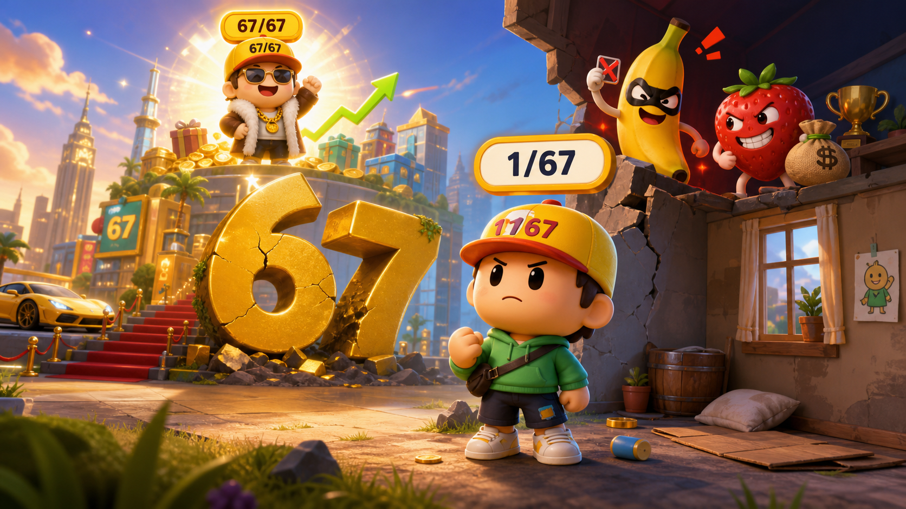
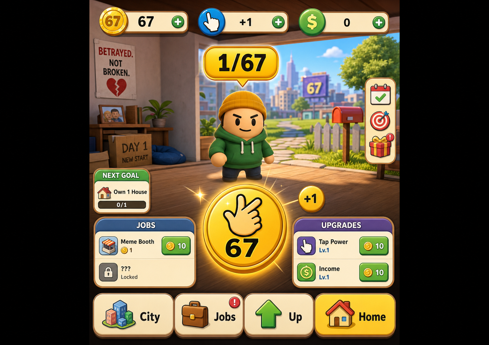
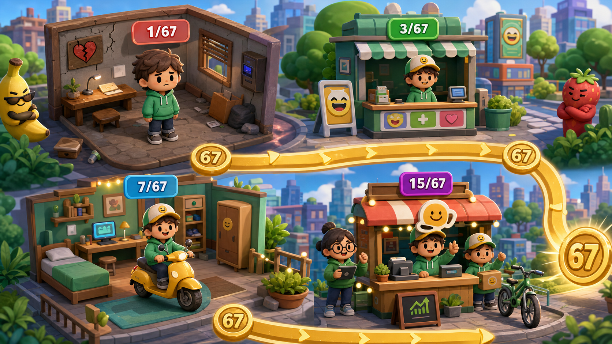
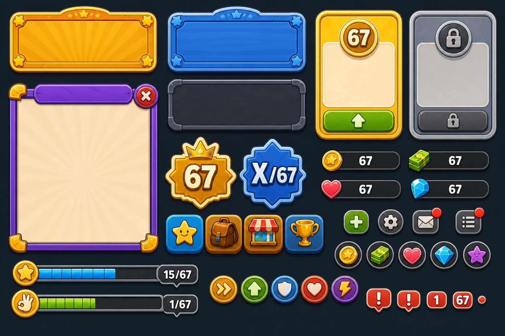
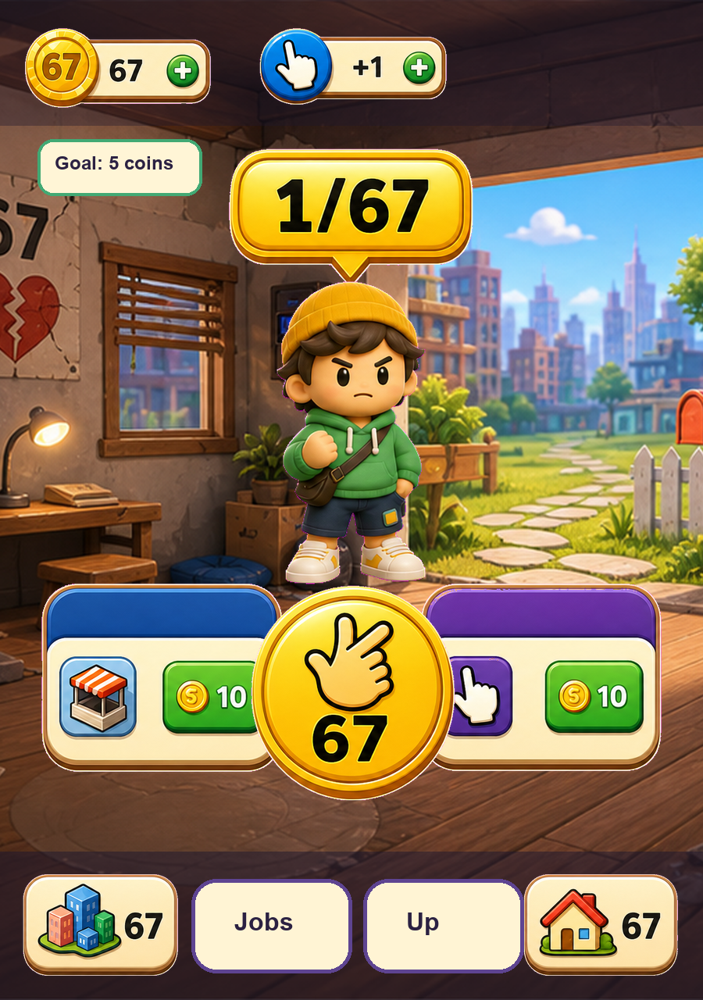
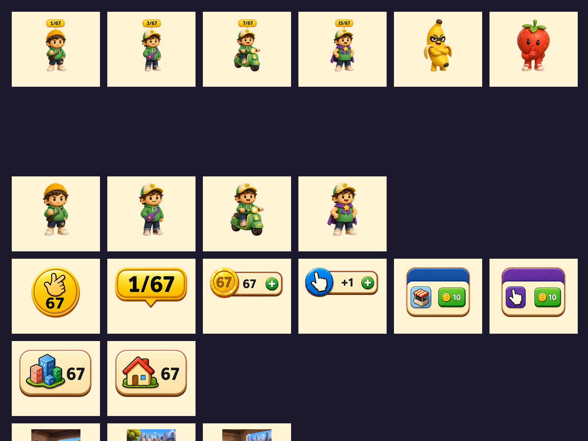
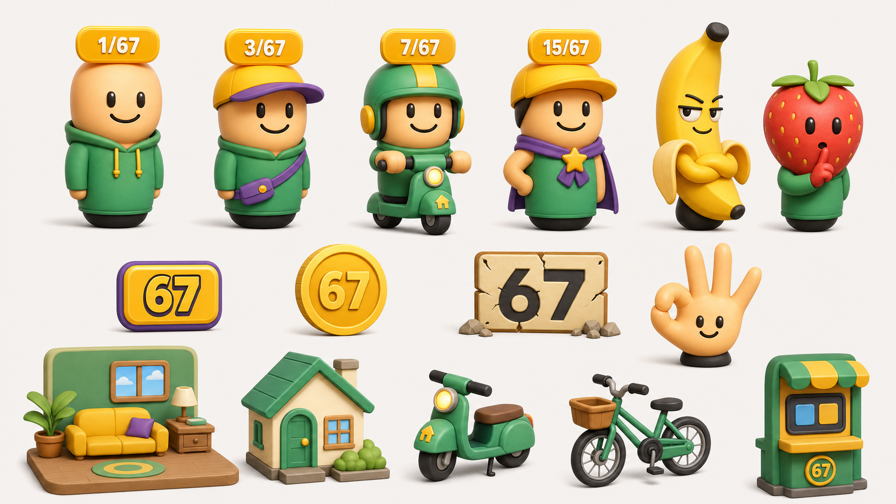
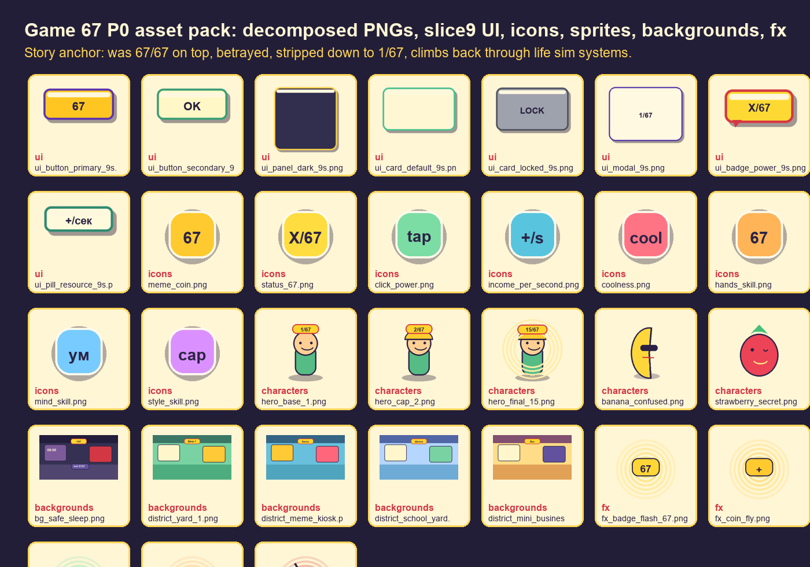
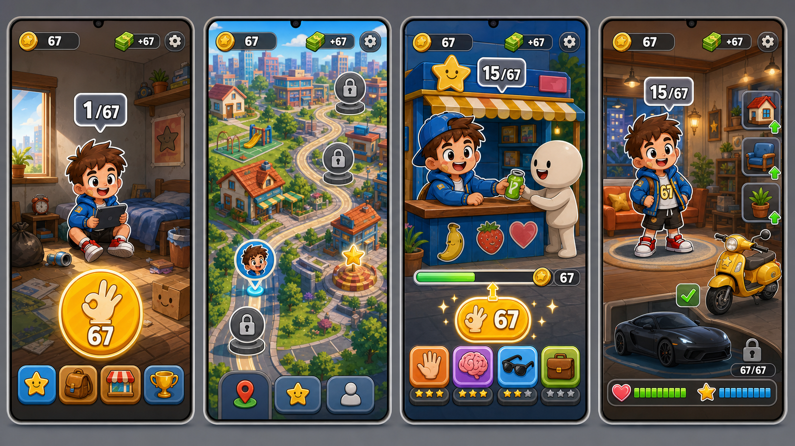

Мем и ранг
`67` - знак крутости. Ребенок видит его в UI, над героем, в наградах, реакциях и финальной цели.

Visual GDD v0.3 / ЦА 5-10
Ты был на вершине `67/67`. Тебя предали, мем обнулили до `1/67`. Теперь это life sim про становление: город, дела, навыки, дом, транспорт и путь обратно к `67/67`.
Концепт
`67` - знак крутости. Ребенок видит его в UI, над героем, в наградах, реакциях и финальной цели.
Герой был `67/67`, но Банан намутил подставу, Клубника знает секрет, и число над героем падает до `1/67`.
Каждый этап меняет жизнь героя: новая привычка, район, навык, дом, транспорт, команда и число над спрайтом.
Актуальный GDD / source of truth
Канон на 2026-06-09: `prototype_mvp_spec.md v0.2`, `data/balance.json v0.5`, `data/ui_flow.json v0.1`, `prototype_build_handoff.md` и `handoff_status.md`.
30 минут активной игры после падения: `67/67 -> 1/67`, цель прототипа `15/67`, мечта после mini-final `67/67`.
Mobile portrait `360x640` как baseline, web playable. PC/native только dev harness для скриншотов, input-emulation и QA.
Intro, Main, `Город`, `Дела`, `Улучшения`, `Дом`, Event modal, Offline modal, Mini-final.
Ровно 4 bottom tabs: `Город`, `Дела`, `Улучшения`, `Дом`. Отдельной вкладки `Мемы` в P0 нет.
`Сила X/67`, мем-коины, клик, доход/сек, крутость, 4 навыка, комфорт, дом, транспорт, события, save/offline.
External playtest еще нельзя: нет runtime build, real screenshots, runtime QA evidence, parent invite evidence и observation rows.
Картинки игры
Драма должна читаться до экономики: герой был `67/67`, его предали, он стартует с `1/67`, а дальше игрок видит город, дела, дом и рост.
Город знает героя. Над спрайтом максимальный мем-ранг.
Банан мутит схему, Клубника знает секрет, табличка 67 треснула.
Комната, первая кнопка `Сделать 67`, путь обратно уже виден.

Комната, герой `1/67`, большая кнопка 67-жеста, монеты и вкладки.
Карта маршрута: дом, двор, киоск, закрытые районы и цель дня.
Активность у киоска, прогресс-бар, награда и навыки.
Комфорт, предметы, транспорт и locked `67/67` как дальняя мечта.
Главная механика UI
Берем язык мемных реклам про бандитов, город и стратегию: над персонажем висит число силы. Ребенок видит рост без объяснений.
Сила растет после апгрейдов и событий.
Соперник ниже уровнем, значит игрок победил.
ЦА 5-10 лет
Главное действие видно сразу. Нажатие в первые 5 секунд.
1-2 строки, простые слова, смешная реакция после покупки.
Первая покупка до 30 секунд, первый статус-ап до 2 минут.
Не взрослая драма, а подстава, мем-коины и возвращение крутости.
Визуальная лестница

Лор
Это главная драматургия проекта. До интро герой уже был легендой: деньги, связи, город и максимальный ранг `67/67`. В 06:00 Банан мутит схему, Клубника знает секрет, табличка 67 ломается, и игрок просыпается с `1/67`. Смысл игры - вернуть свое, но через жизнь, дела и становление.
Герой при деньгах, связях и имени. Его называют не по имени, а по уровню: `67`.
Банан и Клубника становятся символами сделки, слуха и личного мемного обнуления.
Ночник `06:00` и странная схема. Сила падает `67/67 -> 1/67`.
Игрок стартует с мемной подставы, но первая кнопка уже формулирует цель: подняться.
Core loop
Геймплей
Двор, киоск, учебный двор, мини-бизнес. На карте видно, куда герой идет.
Короткий таймер: помочь у киоска, разнести наклейки, собрать заказ, потренировать 67-жест.
Руки, Ум, Стиль, Бизнес открывают дела, районы, предметы дома и транспорт.
Фон героя растет: угол, комната, база, штаб; рядом появляется самокат, велик, 67-тачка.
UI Bible / Components
P0 нельзя собирать из одноразовых картинок. Кнопки, карточки, панели, модалки, плашки `X/67`, progress bars и tabs должны быть компонентами с reusable states и 9-slice рамками.





Life simulator слой
Ближе к Life Simulator: игрок видит не склад апгрейдов, а жизнь героя. Утро дома, выход в район, дело с таймером, прокачка навыка, покупка предмета, новый транспорт и более уверенный спрайт.
4 района прототипа: Двор `1/67`, Киоск мемов, Школьный двор, Мини-бизнес.
Сцены с таймером: сбор мем-коинов, помощь у киоска, разнос наклеек, свой стенд, мини-бизнес.
Руки, Ум, Стиль, Бизнес. Навыки открывают новые дела и апгрейды.
Дом и транспорт растут визуально: матрас, комната, штаб, самокат, велик, `67-тачка`.
Fake shots board
Это рабочие состояния UI про жизнь героя: где он проснулся, куда пошел, какое дело сделал, какой навык вырос и что изменилось в доме.

Герой встал, число над ним живет
+1 мем-коин / +Руки
Жест руками - активность, эмоция и мини-анимация
Сила вспыхнула, новый район стал ближе.
Карта показывает место, маршрут и причину блокировки.
Клубника дает секрет: жест открывает новое дело и реакцию Банана.
Дом и транспорт меняют фон сцены, скорость дел и ощущение становления.
Причинность
UI/UX карта
30 минут
`67/67 -> 1/67`, Банан мутит, большая кнопка `Сделать 67`.
Пакет, кепка, наклейка `67`. Сила до `3/67`.
Команда 67, тележка мемов, ночник `06:00`. Сила до `6/67`.
Клубничный секрет, стенд мемов, значок. Сила до `10/67`.
Камин, команда `67`, первый фанат. Финал: `15/67`.
Прогресс
Системы
В верхнем UI всегда главные: `Сила X/67`, мем-коины, клик и доход/сек. Остальные статы открывают дела, районы, дом и транспорт.
Главная валюта. Получается кликами и пассивным доходом.
Главное число над спрайтом. Цель прототипа: `15/67`.
Открывает мем-события, реакции и смешные фразы.
Idle-ощущение: игра сама помогает, но клики ускоряют.
Руки, Ум, Стиль, Бизнес. Открывают дела, районы и события.
Life stat для дома, транспорта и ощущения роста уровня жизни.
Активность руками, анимация, мемная реакция и главный крючок игры.
Баланс MVP
Проверка: node gamedesing/tools/validate_gdd.mjs
Референсы
Берем структуру вкладок, но упрощаем до действий, улучшений и мемов.
Берем понятный рост снизу вверх, но в мягкой мемной подаче для детей.
Берем большую кнопку, быстрые награды и доход в секунду.
Не взрослый успех, а смешное возвращение силы `67/67`.